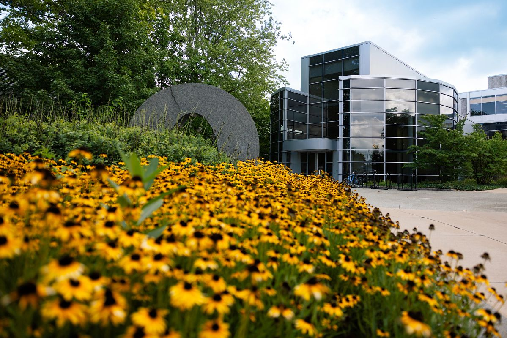

At CEW+, we navigate circumstantial barriers by providing academic, financial, and professional support to help you reach your personal potential. Established to support women through higher education, we lift up women and all underserved communities at U-M and beyond. Through career and education counseling, funding, workshops, events, and a diverse, welcoming community, we exist to empower. We are CEW+, and we’re here to help you reach your potential.
First Year Guide
U-M Counseling & Psychological Services (CAPS) welcomes all of our 1st year students including those who are living on campus and those who are located remotely. We are happy to launch a new resource created exclusively for you: “Go Blue! A New Student’s Guide to Surviving and Thriving at U-M: Mental Health Tips.”
Mental Health Support Options
- Peer Support
- Technology & Apps
- On Campus Supports
- Off Campus Providers